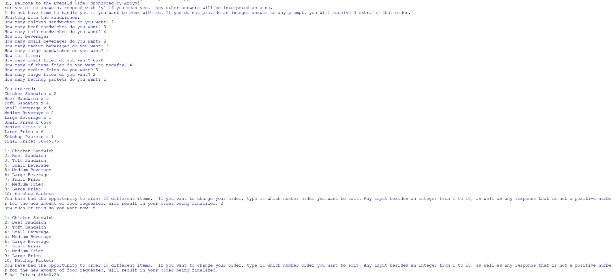

My name is Paarth Agrawal, a current freshman student attending Emerald High School. The classes I am taking this year include Computer Science Essentials, taught by Mr. Baez, English 1, Spanish 2, Freshman PE, Advanced Algebra 2, Biology, and Health. Out of school, I am studying Precalculus at both Brigham Young University, and AoPS. Also, I have a lot of previous engineering experience, with an advanced understanding of the Python language. I have coded many different applications and games in Python, such as Hangman, Blackjack, Connect4, and more. In my CSE class, I have programmed even more applications, like an experimental Pokemon Game with my classmates, an algorithm to take in orders for certain meals and return a final cost, and an algorithm to consistently win Rock-Paper-Scissor games. In the future, I hope to get further experience with Computer Science, specifically through expanding my math knowledge and learning how to code machine learning to create functional AI. I hope to use this to get an internship at a software engineering company, as well as to study Computer Science in college as one of my biggest focuses. I am extremely excited to continue with my education and learn even more about the world around me and how to improve it.
As well as Computer Science, I hope to study business and/or economics in my undergraduate degree, pulling from my interest in mathematics, government and fiscal policy. I hope to apply my Computer Science experience in this field by using machine learning and other basics from the subject to revolutionize the industry and make work in it both more efficient and effective. Computers are our future, with every part of the world incorporating it. AI is becoming commonplace in education, with both teachers and students using it for the sake of learning (unfortunately, for other things as well). It's used in every place from hospitals to schools to the buildings inside which the laws of the future are made. In such a constantly changing world, one of the only ways to be successful is to be a part of this change (will get to the other way below). For me, this means not only learning Computer Science, but applying it in my job and in my daily life.
Before I end, I would like to remind you of a very important quote:
“Education is our passport to the future, for tomorrow belongs only to the people who prepare for it today.” —Malcolm X
The world is built on education. The educated are the ones with the knowledge and the capabilities to provide for themselves, their loved ones, and the people around them. In a couple of decades, it will be people my age who will be the doctors, politicians, engineers, and overall the backbone of our society. If we fail to absorb all of the information we need, we will fail not just ourselves, but those we care about. Hence, in my mind, education is the biggest necessity in one's life, and when one has the opportunity to recieve it, they must take as much as they can from it to be of service to the world. Not to mention that the truly educated can pass this knowledge down to the next generation, so they can learn and improve upon what we have built. Docendo discmius: by teaching, we learn.
As a student in Mr. Baez's CSE class, I have been involved in a multitude of projects, many applicable to real world situations. Two of them especially stand out. One was a program created to order food from a restaurant, given choices from menu options, and the other was a mental health website targeted towards teens to provide a way to destress.
This project aimed to use basic Python logic to create a simple ordering system. Users would select how much of a food item they wanted, and the program would store the information on the food item (amount ordered). It would then calculate the total cost and take into account special discounts, all while using try/except commands to remain completely unbreakable. The basic concepts in this project, such as try/except, conditionals, and working with lists. Unfortunately, there was no documentation for the project, with the only written description of it being a README.md file, with all of the information already present on the portfolio. Two skills I was able to obtain from this project were the skills of logical processes and debugging. This project required a lot of logic to be used in order to figure out things like when there was going to be an error, and if so, what to do, or if it was safe to continue with the code. A program like this also had a lot of bugs, so being able to go through the code and notice possible buildings was another skill I learned to develop.
Github Link 